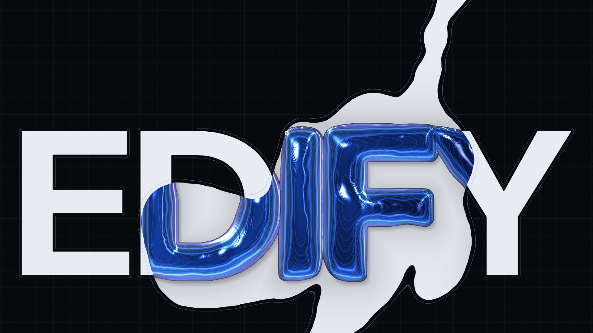

Two series. One grammar.
The films are hairlines on the void: one object per page, every line of copy sourced. The ink series is solid type, a liquid mask and foil. They share the grid, the tolerance lines, the readout in the corners and the same four durations, so either can stand next to the other.
01 / Live
Every scene runs in your browser.
One WebGL2 shader, assets/js/ink.js. The clips below are this same file, captured frame by frame. Move through the frame: the pointer is one more drop of ink.

02 / The ink series
Flat is the agent alone.The ink is EDIFY.
Twelve clips and the stage. Each loops seamlessly: every motion in it turns a whole number of times per loop.
03 / The page films
One object per page,made of hairlines.
Each plays while it is on screen; click one to pause it. The copy is the page's own, with its source file in the corner.
04 / The shared grammar
Technical first.Then beautiful.
Four durations: 140, 420, 900 and 1400 ms. Nothing else.--d-micro · --d-el · --d-section
Claims ease on
--e-edify, structure on --e-out, objects on --e-emph.site.cssThe 56-pixel grille sits under every frame, films and ink alike.P3.x · engine grid
A hairline tolerance line traces every ink, so a dark ink on the void still reads.P3.z
The foil carries contour lines: the balloon is read as a height map.P4.x
Blue is enforced, amber advisory, oxide blocked. Never colour for decoration.state marks
Every loop is seamless: its last frame meets its first.render-ink.cjs